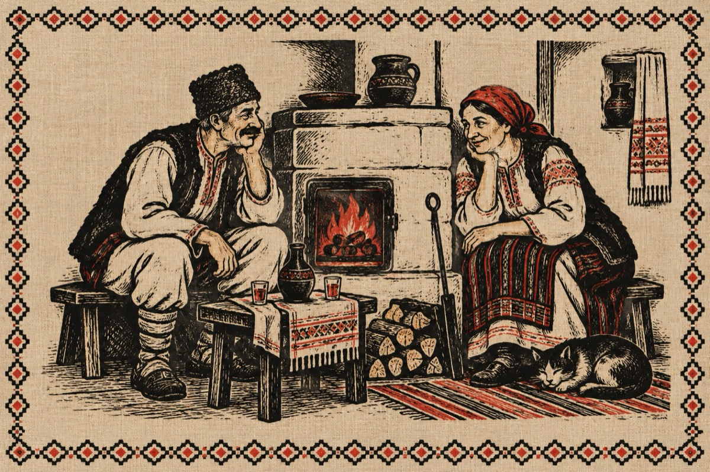

Meri în cone
– Bagăce Văsâi în cone
Șâ țâpă-n foc ceva lemne
Să ne facă de căldură
Și-apoi vin să îți dau gură.
– Mărie oi fo’ ghicito
În piept inima mi-oi fripto
Nu ca al tău foc din sobă
Ci dragostea din voroabă.
Dacă ți-e de aventură
Vino sus în fân la șură
Ș-oi țâpa la marhe fân
Sâ țâie mâna pân sân
Să ce gâdil la inimă
Că numai ea e de gină!
– Văsălie, Văsălie,
Capu-ți plin de nărozie
Meri la vite și dă broazbe
Că și tu ești numai voarbe
De la zâsă pân’ la fapce
Ai ajuns un papă lapce
Hai în cone la căldură
Să punem de o friptură
Și-un gin ars să ciocănim
După-„aceia” să durmim!
Vasile Groza